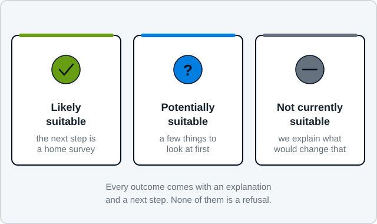

Find out whether a heat pump is worth exploring for your home
A quick first step to understand whether a heat pump is worth exploring for your property. Four short stages, a few minutes, no photographs and nothing to measure. You get an honest first view of where your property stands and what a sensible next step would be.
Your answers are worked out in your own browser. Nothing is sent to Airwarm unless you choose to send it using the form at the end.
Preparing for our April 2027 launch. The assessment is worth doing now: it tells you where your property stands.
What this is, and what it is not
This is an indicative first step, not a technical heat-loss survey. It does not produce a design, a specification or a price, and it is not a final answer — a person at Airwarm makes that judgement.
Your answers stay on your device until you send them
All four stages run entirely in your browser, and so does the result. Nothing you enter reaches Airwarm while you are working through it, nothing is saved to your device, and there are no cookies and no analytics on this website.
At the end you can fill in a short form to send us your answers and your contact details, so we can look at your property properly and come back to you. That is the only point at which anything is sent, it is entirely optional, and you can read your result and close the page instead. What happens to the details if you do send them is set out in our privacy policy.
No photographs needed
We do not ask for pictures at this stage. Nothing to measure, nothing to look up.
Nothing to prepare
Best guesses are genuinely fine, and “not sure” is a real answer rather than a failure. Where an answer is uncertain, the result says so.
About five minutes
Sixteen short questions across three stages, then your result. You can go back and change any answer before you finish.
What the three results mean
There is no pass and no fail. The three outcomes describe what happens next, and every one of them has a route forward attached.

| Outcome | What it means | What happens next |
|---|---|---|
| Likely suitable | Several positive indicators: reasonable fabric, workable emitters, somewhere sensible for the unit and the cylinder. | Send us your details and we review the property alongside your answers, then explain in writing whether a survey is worth doing. |
| Potentially suitable | Your property may well be suitable, but one or two details need clarification. This is the most common outcome and it is not a problem. | We explain which details matter and what may need improving before a survey would be worthwhile. |
| Not currently suitable | A heat pump may not be the best next step today. Note the word currently — this is about the property’s condition now, not for ever. | We name the main constraint, explain what would resolve it, and suggest practical improvements or alternatives. |
“Not sure” is a useful answer
Plenty of people do not know how their walls are built or whether the loft was topped up. The assessment is designed to cope with that: uncertainty moves the result towards “needs checking” rather than counting against you.
What this cannot tell you
It cannot size a heat pump, tell you which radiators need changing, confirm a cylinder position, assess noise at a neighbour’s window or produce a price. All of that needs a survey, and the survey needs measurements rather than recollections.
What happens after you get your result
Nothing, unless you decide otherwise. Because the assessment sends us nothing, the next move is yours: read the result, and if it is worth a conversation, e-mail us and say what you got.
A person then reads what you have described — not a scoring engine. If something in it looks like it needs clarifying, or looks like a genuine obstacle, we would rather find it in an e-mail than three visits later. If a survey is not justified, we will say so and explain why.
The full eight-stage process is here, including what a survey covers and what you receive afterwards.
Useful things to put in that e-mail
- The outcome the assessment gave you
- The town or postcode area
- What kind of property it is, and roughly how old
- How it is heated at the moment
- Anything you already suspect might be a problem
You do not have to include any of it. It just means the first reply is useful rather than a round of questions.
Questions about the assessment
Will a heat pump work in my house?
Most homes can be heated well by a heat pump, though not every home today and not every home without changes. What actually decides it.
What if the assessment says my home is not currently suitable?
You will be told which constraint caused that and what would resolve it. It is a statement about the property’s condition today, not a permanent verdict, and there is nearly always something worth doing even if a heat pump is not the immediate next step.
What happens to my answers?
Nothing. They are held in your browser while you fill the form in and they are gone when you close the tab. There is no form submission, no e-mail sent automatically, no database, no cookie and no analytics anywhere on this site. If you want us to see your answers, you tell us yourself.
Why not just ask for my details at the end?
Because Airwarm is not yet registered as a company and has not yet published a privacy policy, so there is nobody who could properly be responsible for your personal data today. Rather than collect it anyway and sort the paperwork out afterwards, the form has been built to work without it.
Is this the same as a survey?
No, and it is important that it is not mistaken for one. A survey measures every room, records the construction, measures the existing emitters and assesses siting, noise and the electrical supply. This is a triage tool that tells you whether that visit is likely to be worthwhile. Here is what a survey actually involves.
I do not know the answer to some of the questions.
Answer “not sure”. It is offered on every question where uncertainty is normal, and the result accounts for it by telling you what needs checking rather than by assuming the worst.
I am outside Bradford, Leeds or Shipley.
You are welcome to run the assessment anyway — it will still tell you something useful about your property. Whether Airwarm can help you yet is a separate question, and the honest answer depends on where you are. Ask us and you will get a straight answer either way.
Start with your home, not a product
The Home Energy Assessment takes a few minutes, asks for no photographs and gives you an honest first view of whether an air source heat pump is worth exploring for your property.
Unusual property? Listed building, off-grid, a renovation part way through? E-mail us and describe it. We would rather have the conversation than have you guess.